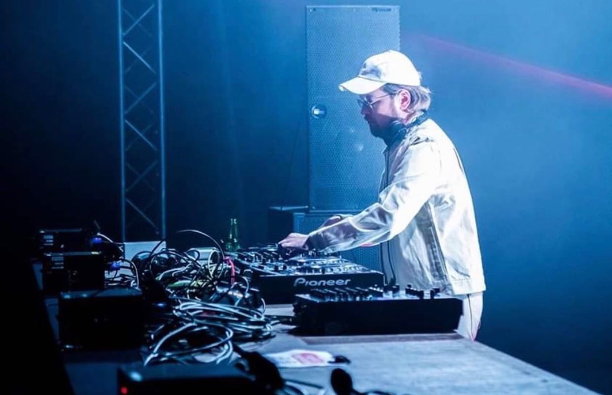
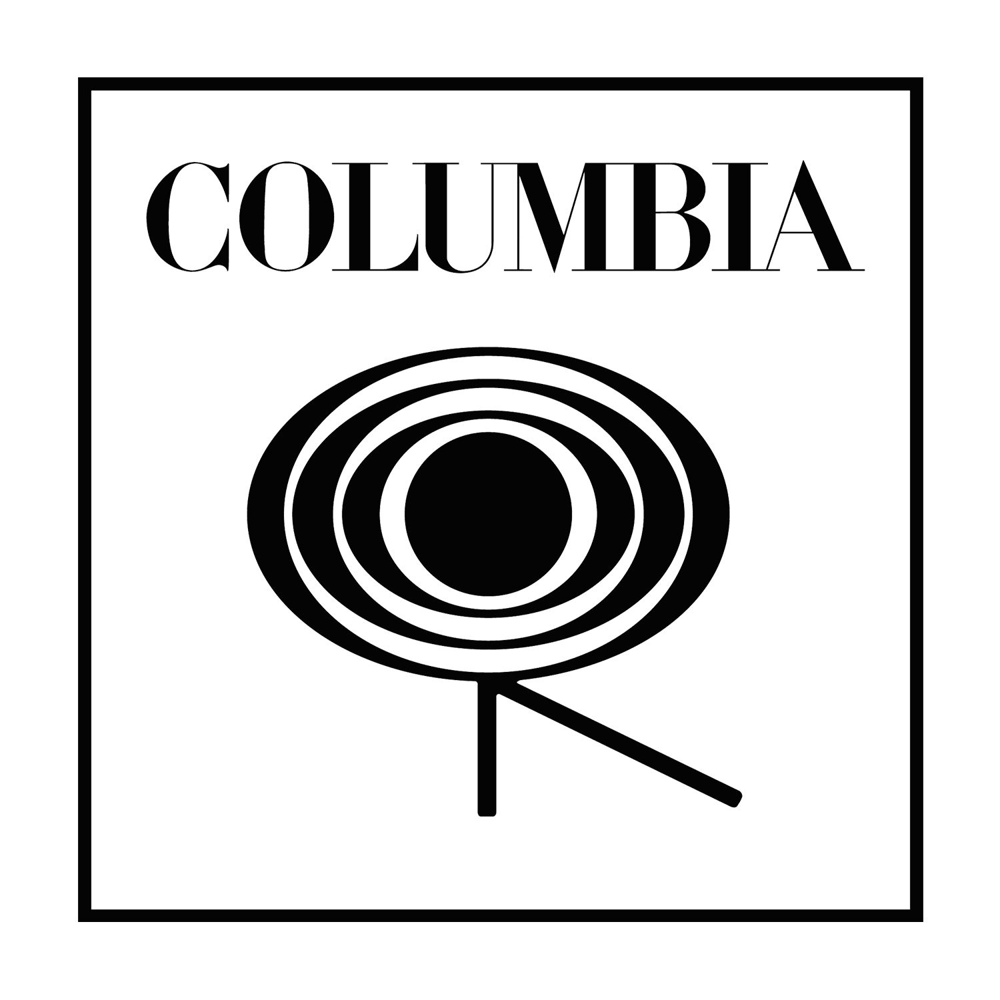
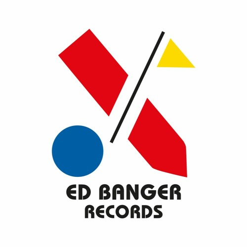
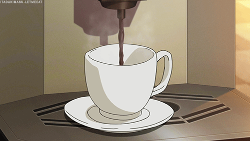

|
Come get a coffee, surrounded by music.This project is born from a passion about music. For a long time now, i was looking for a place which provides artists performances in a chill café. A place where people can immerge themselves in a bubble out of time and surrounded by good music. A place where you can work, chill, discuss and share your passion.Blue Moon Café is also a place aiming to be a spotlight for unknown artists. In the environment of a coffee, relations have more chance to click giving an area more propitious to discussions. |
Get some tickets !In this coffee, our animation will be made on a scene where artists picked beforehand showcase their original songs on live performances like « mini-concerts », while it’s also an animation for the clients, the artists may benefit from it by visibility.You can get FREE tickets here to experimente a DJ set this summer ! Join it |

|
 |
|  |  |
Our collaborationsOur partnership with labels and production companies allow us to invite representatives of the music field to link them up with the current artists, both of the parties benefit from that.Join it |
Contact usDon't hesitate to take contact with us to organize some music dating at bluemooncafe@gmail.com |  |
Join us on YoutubeOnce a week, a live show will be organised with tickets, this event will be filmed and streamed on twitch, then reposted on Youtube. Don't miss it ! |
|
All rights reserved. ©BlueMoon Café, 2024 |